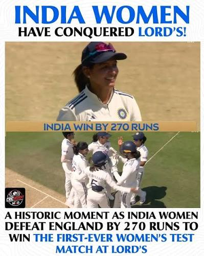

1) India defeated England in first ODI :
India started the ODI series against England with a strong six-wicket victory at Edgbaston. Captain Shubman Gill led from the front with a brilliant 80-run knock, while Axar Patel and Washington Sundar guided the team home in a successful chase.
2) Historic Win for India Women at Lord’s:
India Women created history by defeating England Women by 270 runs in the first-ever Women’s Test played at Lord’s. Yastika Bhatia scored a century, while Kranti Gaud starred with the ball, helping India secure a memorable victory.

3) ICC Announces New ODI World Cup Format:
The ICC has introduced a new format for the 2027 ODI World Cup. The tournament will feature a “Super Series” and “Super 7” stage, increasing competition and creating the possibility of multiple India-Pakistan encounters during the event.